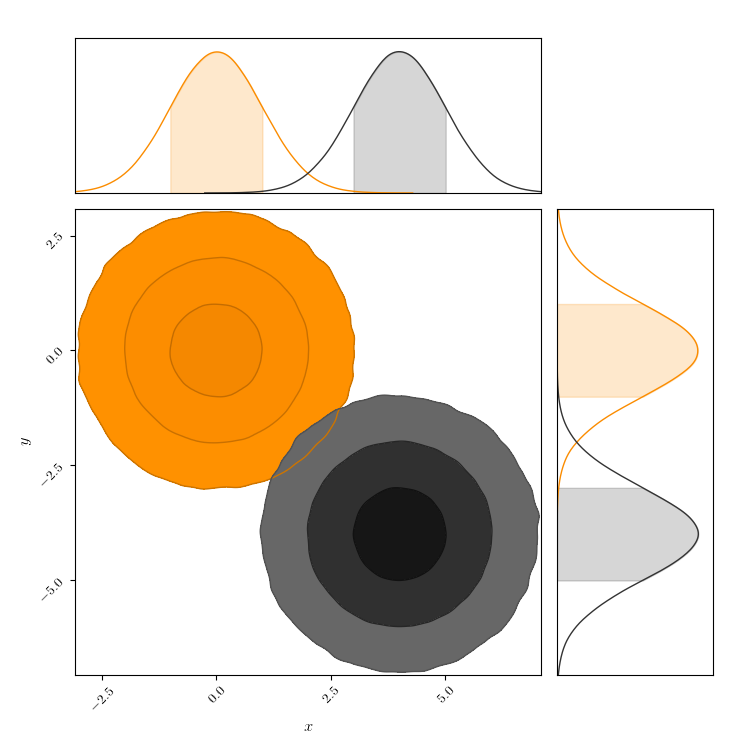

Shade Gradient¶
Control contour contrast!
To help make your confidence levels more obvious, you can play with the gradient steepness and resulting contrast in your contours.
import numpy as np
from numpy.random import multivariate_normal
from chainconsumer import ChainConsumer
np.random.seed(0)
data1 = multivariate_normal([0, 0], [[1, 0], [0, 1]], size=1000000)
data2 = multivariate_normal([4, -4], [[1, 0], [0, 1]], size=1000000)
c = ChainConsumer()
c.add_chain(data1, parameters=["$x$", "$y$"])
c.add_chain(data2, parameters=["$x$", "$y$"])
c.configure(shade_gradient=[0.1, 3.0], colors=['o', 'k'], sigmas=[0, 1, 2, 3], shade_alpha=1.0)
fig = c.plotter.plot()
fig.set_size_inches(4.5 + fig.get_size_inches()) # Resize fig for doco. You don't need this.
Total running time of the script: ( 0 minutes 2.033 seconds)